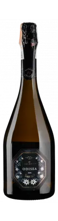
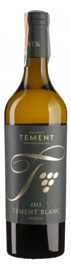
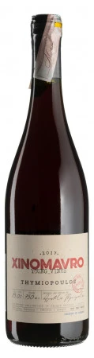
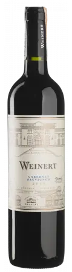
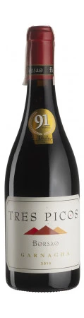

U600
We live in wonderful times when it comes to wine consumption. The production quality is rather high, the market is big and wide, the prices are… well, it’s a tricky and sensitive topic. Of course, it’s not that hard to pick great and delicious wines when you don’t have to think about money. But in reality, we want to pay less and get more. Right? In my experience, relation between enjoyment and price is not linear. There is a point, where you have to start paying more and more just to get a tiny bit of enjoyment increase. The marked below this said point is blessed with many affordable wines that still deliver lots of enjoyment. And this is what we are going to explore this time.
For this little event I’ve picked 6 wines - 1 sparkling, 2 whites and 3 reds. There is one simple rule - their price must be below 600 UAH (wholesale price). While I was picking 6 wines out of 30 candidates I had in mind two goals: (1) to widen your palate by including new regions and grapes and (2) to pick wines that have the highest potential to please you. The decision was hard to make, but I hope you’ll enjoy this story! Our protagonists are:
- Naveran Odisea 2019
- Weingut Tement Blanc Reserve 2017
- Golan Heights Winery Chardonnay Yarden 2019
- Thymiopoulos Xinomavro Young Vines 2018
- Weinert Cabernet Sauvignon 2010
- Bodegas Borsao Tres Picos 2019
Results
| amean | rms | sdev | favourite | price | QPR | |
|---|---|---|---|---|---|---|
| Wine #1 | 3.79 | 3.82 | 0.2632 | 1.00 | 477.00 | 3.6794 |
| Wine #2 | 3.33 | 3.37 | 0.2600 | 1.00 | 542.00 | 1.7086 |
| Wine #3 | 3.58 | 3.61 | 0.2217 | 2.00 | 559.00 | 2.3199 |
| Wine #4 | 3.87 | 3.87 | 0.0578 | 0.00 | 407.00 | 4.8336 |
| Wine #5 | 3.82 | 3.84 | 0.1217 | 0.00 | 565.00 | 3.2615 |
| Wine #6 | 4.06 | 4.07 | 0.1580 | 2.00 | 585.00 | 4.4621 |
How to read this table:
ameanis arithmetic mean (and not ‘amen’), calculated as sum of all scores divided by count of scores for particular wine. It is more useful thantotal, because some wines are not tasted by all participants.rmsis root mean square or quadratic mean. The problem with arithmetic mean is that it is very sensitive to deviations and extreme values in data sets, meaning that even single 5 or 1 might ‘drastically’ affect the score. Without deeper explanation, RMS is picked because it is bigger than or equal to average, because it basically includes standard deviation.sdevis standard deviation. The bigger this value the more controversial the wine is, meaning that people have different opinions on this one.favouriteis amount of people who marked this wine as favourite.priceis wine price in UAH.QPRis quality price ratio, calculated in as100 * factorial(rms)/price. The reason behind this totally unprofessional formula is simple. At some point you have to pay more and more to get a little fraction of satisfaction. Factorial used in this formula rewards scores close to the upper bound 120 times more than scores close to the lower bound.
Wines
Naveran Odisea 2019

- producer: Naveran
- name: Odisea
- vintage: 2019
- grapes: Chardonnay, Parellada
- location: Cava DO, Spain
- sur lie: around 24 months
- alcohol: 12.5
- price: 477 UAH
Assuming that you have taste and you are not planning to drink sugared piss (which is totally fine if you like it), you have two safe options when comes to sparkling wines below 600 UAH. If you crave for floral and generally lighter stuff - Prosecco is a good choice. Yup, there are fine choices here. The other choice is Spanish Cava - for cases when you want something bolder, with cream or toast notes. Unlike Prosecco, Cava is produced in traditional style, meaning that processes that result bubbles occur entirely in the bottle.
Of course, there are other choices, but they are not necessarily safe. For example, good Pet Nats and Col Fondos usually cost a little bit more than 600 UAH and… not everyone likes them. In my opinion, they are overpriced. Though in the end it’s for you to decide how to spend your money.
For this evening I picked a bottle of Cava from respected producer. It’s made of 100% Chardonnay, it spent around 24 months in the bottle on dead yeast cells (sounds horrific, isn’t it?). Elegant, creamy and citrous. A fine beginning of the evening.
Weingut Tement Blanc Reserve 2017

- producer: Weingut Tement
- name: Blanc Reserve
- vintage: 2017
- grapes: Sauvignon Blanc, Welschriesling, Weissburgunder
- location: Südsteiermark Qualitätswein, Austria
- alcohol: 12.5
- sugar: 1.5
- price: 542 UAH
The choice here is simple. Many people do enjoy drinking light white wines made of Sauvignon Blanc. Especially from Marlborough, New Zealand. There is nothing wrong with those naked asses on the label! But fortunately, the world of lighter wines is vast and there are other regions. Tement is a respected producer from Austria that makes wonderful white wines. His range is wide even under 600 UAH. And I love all of them. Since it’s winter, I picked a bolder Sauvignon Blanc based blend that should be refreshing and remind of warmer times without freezing us to death.
Next time you decide to buy a bottle of Sauvignon Blanc, takes something from Tement or Clos du Tue-Boeuf. Or take some Malagousia from Greece.
Golan Heights Winery Chardonnay Yarden 2019

- producer: Golan Heights Winery
- name: Chardonnay Yarden
- vintage: 2019
- grapes: Chardonnay
- location: Golan Heights, Israel
- alcohol: 14
- sugar: 3.6
- price: 559 UAH
And this one is tricky. Israel is not known for producing wines with good value. Hell, there are so many options if you wish to pick affordable Chardonnay. Even if you are aiming for oaked and creamy style. After all, Australia exists for a reason! But in my opinion this wine has a great value and every time I visit Wow Crabs in Kyiv Food Market, I take a bottle of this wine to complement Shrimps Popcorn. It’s a food porn, I I know what you are going to do on your weekends. But Yarden Chardonnay delivers even solo. 2019 is less oaky than 2018 and this makes it more interesting.
Thymiopoulos Xinomavro Young Vines 2018

- producer: Thymiopoulos
- name: Xinomavro Young Vines
- vintage: 2019
- grapes: Xinomavro
- location: Naoussa POP, Greece
- alcohol: 13
- sugar: 3.1
- price: 407 UAH
To be honest, it is hard to pick lighter wines in this price segment. But fortunately, there is Greece. And fortunately, there is Thymiopoulos (checkout their bolder Earth & Sky wine). Although Xinomavro is usually used to produce medium-high bodied wines, this one is on a lighter side.
Weinert Cabernet Sauvignon 2010

- producer: Weinert
- name: Cabernet Sauvignon
- vintage: 2010
- grapes: Cabernet Sauvignon
- location: Mendoza, Argentina
- alcohol: 14.5
- sugar: 3.58
- price: 565 UAH
At this point you might ask two valid questions. Why Weinert over Catena Zapata? Why Cabernet Sauvignon over Malbec? The first question is crucial for answering the second. Those who drink with me on picnics know that I love to bring wines by Catena Zapata. Be it Malbec, Cabernet Sauvignon or Cabernet Franc. Their entry level wines are great in terms of quality and price. But many of you suffered enough. And besides, Catena Zapata is well known and respected winery. Instead I wanted to show you something special - Weinert! Unique winery that properly ages their wines prior to release. Just like the best wineries from Rioja. And despite ageing it is affordable. And is well made and delicious. That’s why I picked Weinert. The reason behind the grape choice is rather disappointing - Malbec is not available anymore. But fear not. In case you never tasted good Malbec, you will have a chance during our Americas wine tasting event.
And yes, I like to drink this wine. Especially with grilled meat. Makes me feel like I am from Argentina. Though I’ve never been there.
Bodegas Borsao Tres Picos 2019

- producer: Bodegas Borsao
- name: Tres Picos
- vintage: 2019
- grapes: Garnacha
- location: Campo de Borja DO, Spain
- alcohol: 15
- sugar: 1.8
- price: 585 UAH
IMHO, this is the most controversial choice of the evening. Why controversial? Because we already have Spain and I could pick something else (Portugal, Italy, France or Moldova after all). And because its absurdly powerful. But since it’s winter and I tortured you with many complex and not powerful enough wines in previous year, I decided to make a change for once. Besides, I’ve talked so much about this good modern producer from region with a lovely name - Campo de Borja (don’t forget about Spanish pronunciation), that it only makes sense to give it a try.